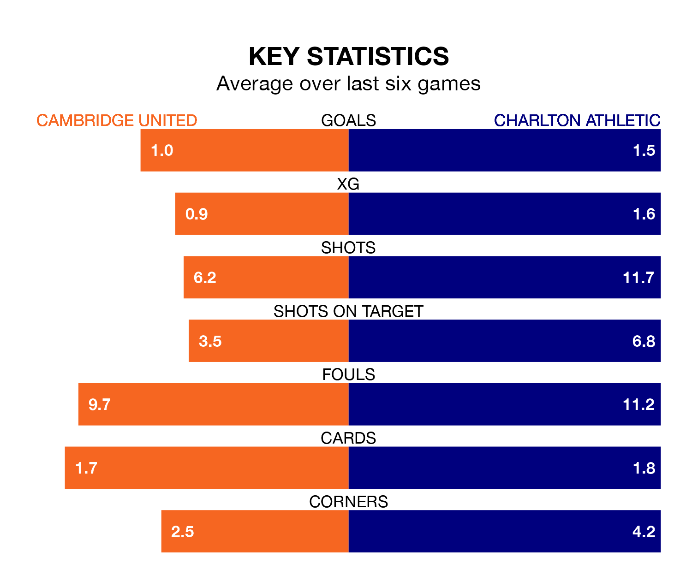

Charlton Athletic face Cambridge United on Saturday seeking to protect their formidable unbeaten run in EFL League One.
The Addicks are unbeaten in 12, with four wins and eight draws, ahead of the 3pm kick-off.
They face a Cambridge team who have won three and drawn one over the same number of games.
In Alfie May, Charlton have the league's most on-form striker so far this season. He has notched 23 goals in 40 appearances.
His goal rate of one every 145 minutes is quicker than that of Gassan Ahadme Yahyai, Cambridge's top scorer with a goal every 162 minutes, and a total of 10 goals in 24 games.
With 37 goals in 41 games so far this season, United are scoring at below the league average rate with 0.9 goals per game. And they are conceding more than average, letting in 57 goals at a rate of 1.4 per game.
Athletic, meanwhile, are above average scorers, with 1.4 goals per game, compared to a league average of 1.3. They have also conceded 1.4 goals per game.
The home team are 19th in the table after 41 games, of which they have won 12 and drawn nine, earning 45 points.
The Addicks are three places ahead of Cambridge in 16th, with 11 wins and 18 draws putting them on 51 points.
In the last five years, Cambridge and Charlton have played each other on five occasions. Charlton won three of them and they drew twice.
On average, Cambridge scored 0.8 goals and the Addicks 1.8 in those matches.
Their last meeting was on December 9, when they played out a 2-2 draw.
Cambridge's last match was on April 6, a 1-0 loss against Blackpool.
Charlton drew 2-2 with Wigan Athletic last time out, on Tuesday, with Charlie Hughes (own goal) and Chukwuemeka Ademola Amachi Aneke on the scoresheet.
Saturday's match will be refereed by Darren Drysdale, who has taken charge of 15 EFL League One games so far this season, issuing three red cards and booking 58 players. He has awarded three penalties.
The last Cambridge game Drysdale refereed was a 2-0 home win against Exeter City on December 22. His last Charlton match was their 1-1 draw away at Blackpool on January 27.
Updated: 10:01 (UTC), 12/04/24